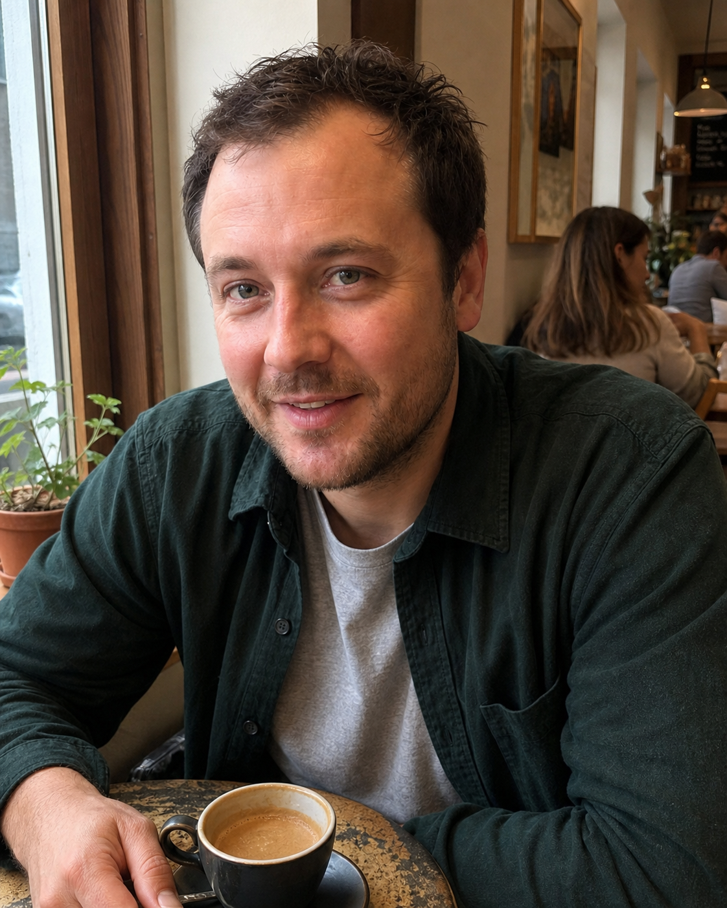
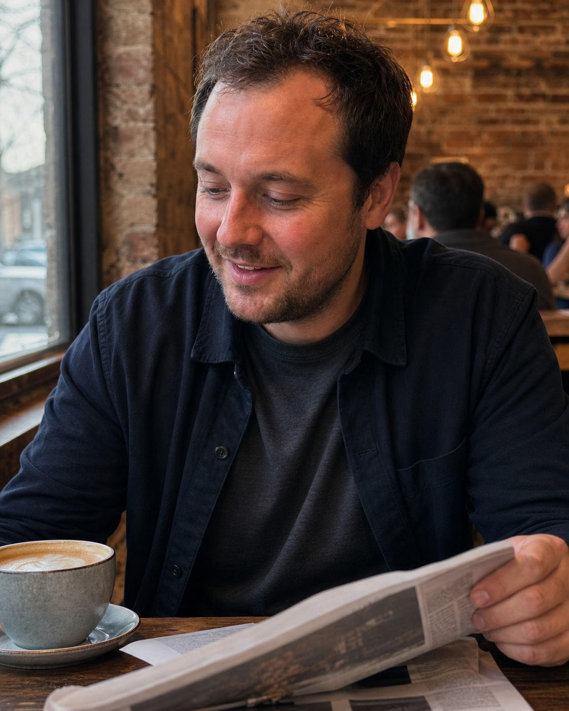
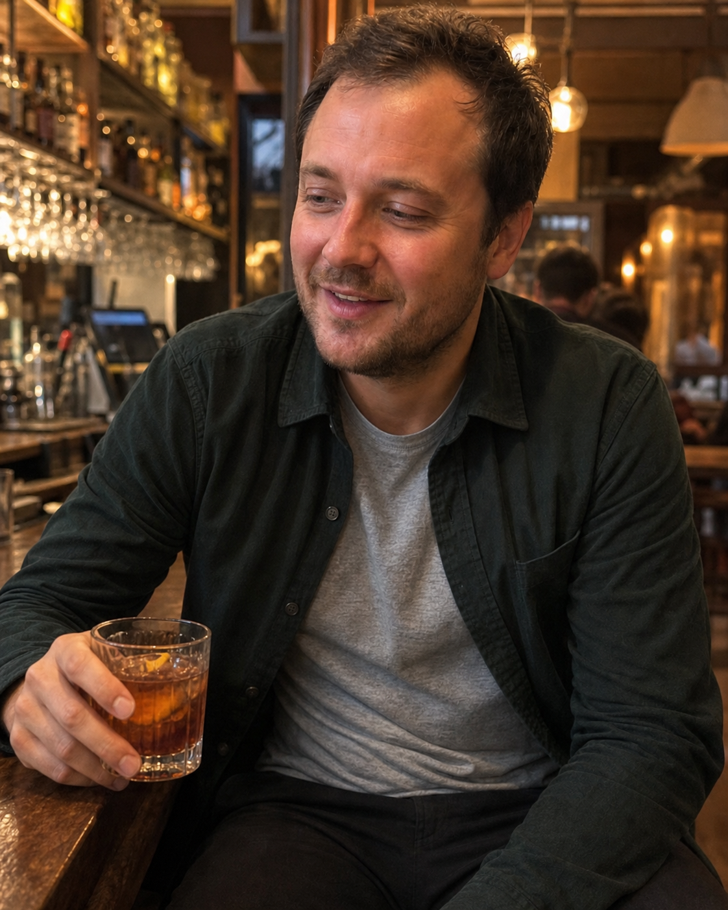
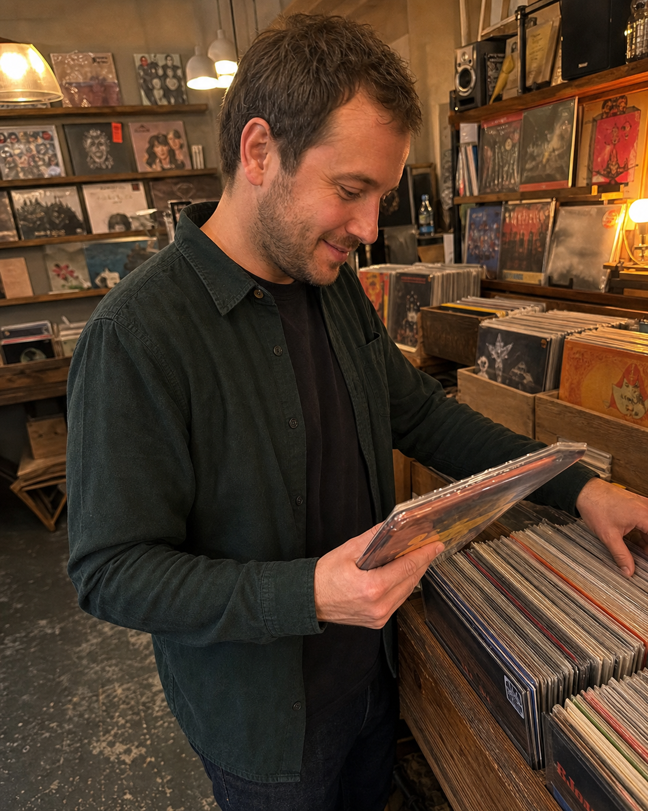

“Here is my face.”
Then another face photo. Then another one. The profile gives her no new information.
Before you make a single new photo
A dating profile does not work because every photo is “good.” It works when every photo adds a new reason to stop, stay interested, and match.
Why most profiles die
A mirror selfie, a gym photo, a group shot, another selfie, an old holiday photo, a night out. That is not a story. It is a pile of pictures that never makes the account stronger as she scrolls.
Then another face photo. Then another one. The profile gives her no new information.
A blurry drinking photo does not show a life. It shows one blurry night.
A far-away travel photo makes the location more memorable than you are.
The finished profile
This is the default line-up. It takes her from a quick first glance to an actual reason to choose you, instead of leaving her with six random pictures to decode.
What this photo doesGets her to pause on your profile instead of swiping past before she sees the rest.
What this photo doesMakes you look current, real, and like the same guy she would meet in person.
What this photo doesShows there is more to you than your face, your phone, or the inside of a gym.
What this photo doesShows how you present yourself in real life—not just in a cropped selfie.
What this photo doesMakes you feel relaxed, normal, and like a guy she could actually have a good time with.
What this photo doesGives her something specific enough to ask about instead of leaving her with nothing to say.
Part 2 · Set up the AI
Do not start generating your six photos from random selfies. Pick the route that works for you, then use the same reference photos for every image you make.
Train a reusable version of yourself once, then use it for every photo in the plan. This is the strongest option for keeping one consistent face across all six scenes.
Upload your strongest reference photos in a new Gemini chat, then use the prompts in this guide. This is the simple free way to make your first set.
Use this instead of Gemini if you already have ChatGPT Plus. Upload the same reference photos, then use the prompt for each photo.
The 10-Selfie Method · Gemini setup
Open Gemini →
Use Gemini in your browser, or download the Gemini app if you have not already.
Use 10 current photos of yourself: different angles, different expressions, and at least one full-body shot. Clear reference photos give Gemini a stronger version of your face and body. Leave out group shots, filters, sunglasses, face coverings, duplicates, and old photos.
Each route later in this guide gives you the exact prompt. Keep the uploaded photos in the chat, paste the prompt, and generate. That is it.
Use the image only when it clearly looks like you now. If it gives you a different face, wrong hair, or a polished AI look, regenerate in the same chat with the same uploaded photos.
Paid setup: Higgsfield Soul ID
Collect 5–20 recent photos of yourself. More clear, usable photos give the tool a more accurate version of you. Use one person only, with different angles, expressions, and distances.
Open the Soul ID upload page →
Upload the reference pack, name the character, and start the training.
Open Soul 2.0 →
Select your Soul ID, then paste the prompt for the photo you are making.
Part 3 · The six photos, explained
Read these before you touch the prompts. You need to know what each image is for; otherwise you will generate six photos that all do the same job.
Your first photo earns the rest of the profile. It makes your face clear, current, and worth a second look in one second.
A mirror selfie, car selfie, sunglasses, distant holiday shot, or group photo.
It starts the account with uncertainty. She cannot get a clean look at you, so there is no reason to stay and inspect the rest.
Clear face. Current hair and facial hair. Normal clothes. A natural expression. You look like a guy who is comfortable being seen.
The second photo backs up the first. It proves your strongest photo was not one lucky angle from three years ago.
Another version of the same selfie, the same outfit, or the same face at a slightly different angle.
The profile still has only one piece of evidence: his face in a controlled pose. Nothing makes the first photo feel more real.
A different angle and setting, still clearly you. It looks current and naturally taken, not like a second attempt at the same profile shot.
This is where the profile stops being a collection of face photos and starts showing what you actually do with your time.
A photo where he is tiny and the activity takes over—or nothing but gym, car, and bedroom photos.
She gets no sense of his real world. The profile says he exists, but it does not show how he spends a weekend or what he is into.
You are clearly visible doing something that belongs in your actual life: an interest, place, skill, or routine that gives the profile substance.
This is the full, normal version of you. It shows how you dress, carry yourself, and turn up in the real world.
A cropped face photo, a mirror picture, or a shirtless flex that only shows one part of him.
She still has to guess what he looks like in person. There is no clear picture of his build, his style, or his general presence.
A natural full-body or three-quarter shot in clothes you would actually wear out. Put together, believable, and not over-styled.
This image puts you in a setting where meeting you feels easy. It gives the profile warmth, movement, and a normal social energy.
A dark nightlife shot, a group photo, or a staged picture that tries too hard to prove he is having fun.
It makes the profile feel distant or performative. She can see a night out, but cannot picture spending a normal afternoon or evening with you.
A relaxed, believable setting where you look easy to be around: a drink, a walk, a meal, an event, or a weekend plan that fits your life.
The final photo gives her something specific to ask about. It turns a profile she liked into a profile she has an excuse to message.
A sixth version of the same face photo, a random scenery shot, or whatever was left in the camera roll.
The profile ends exactly where it started: she knows what you look like, but nothing about you has created a conversation.
A visible, real detail with a story behind it—something she can ask about without inventing a generic opener.
Part 4 · The prompt library
No profile routes. No fake lifestyle. Each option below is a close, flattering snapshot with a little bit of real life around it. Pick one prompt from each section—the one you could genuinely explain if asked about it.
Your strongest close portrait. Face clear. Warm expression. Enough context to feel like a real person took it.

A second close photo that proves the first was not a single lucky angle.

One normal thing you actually do. The prop supports you; it does not become the photo.

Still a close candid portrait. You see enough of the outfit because he is sitting down—not because he has been put in a fake street scene.

A close photo where you look fun and easy to spend an evening with.
End with one visible detail that gives the profile personality.

Archived prompt draft
Pick the route you chose in Part 4. Each bank gives you three leads, two life photos and two date photos—where the choice matters—plus the three images every profile needs.
Test set v2 · Use these instead
The scene needs a reason for a friend to lift their phone. No standing outside a place waiting to be photographed. These are close, casual moments that happen while he is already doing something.
Using my uploaded reference photos, create a vertical 4:5 rear-camera iPhone snapshot. I am sitting outside a small café opposite the friend taking the photo. The friend has caught me halfway through replying to something: I am leaning back slightly in my chair, one hand loosely around a coffee cup, looking just to the side of the phone with a small genuine smile. Crop from mid-thigh to above my head; I fill most of the frame. I wear a navy overshirt over an off-white T-shirt and charcoal trousers. The table has a folded newspaper and a glass of water, with the café frontage softly behind me. Bright overcast daylight, slightly off-centre framing, ordinary phone exposure, visible skin texture and minor imperfections. It must look like one quick photo a friend took during coffee, not a posed portrait.
Using my uploaded reference photos, create a vertical 4:5 rear-camera iPhone snapshot of me sitting at an outdoor table at a casual neighbourhood restaurant with a friend opposite. I have just turned from looking down the street after checking whether the food is coming, and am glancing back toward the phone with an unforced half-smile. One forearm rests on the table; a folded menu and small bowl of olives are in front of me. Crop from waist to above my head; I fill about two-thirds of the frame. I wear a dark green overshirt and faded black T-shirt. Soft late-afternoon daylight, slightly imperfect phone framing, normal pavement and blurred tables behind. Real pores, faint under-eye texture, no beauty smoothing, no restaurant-ad styling.
Using my uploaded reference photos, create a vertical 4:5 rear-camera phone photo taken by a friend while I am actually cooking dinner in a normal kitchen. I am standing side-on at the hob, stirring pasta in a pan, then turning my head toward the friend because they said something funny. The expression is a small mid-laugh smile, not a pose. Crop from mid-thigh to above my head; I am the clear close subject. Plain washed-grey T-shirt and dark trousers. Chopped herbs, lemon and a wooden spoon on the counter; the kitchen is lived-in but tidy. Warm overhead light mixed with fading daylight from a window. Slightly tilted phone frame, visible pores and flyaway hairs, no glossy food photography or luxury flat.
Using my uploaded reference photos, create a vertical 4:5 rear-camera iPhone photo taken by a friend walking a few steps behind me on a quiet local street. I have just left a bakery and am carrying a small brown paper bag in one hand, turning my head back over my shoulder after the friend calls my name. Capture the instant before I fully stop: natural walking posture, one foot forward, slight smile. Frame from head to shoes, but keep me large in the image with the camera only three metres away. Navy overshirt, cream T-shirt, charcoal trousers and white trainers. Brick houses, a parked bike and muted daylight behind. Real fabric creases, ordinary phone colour, no fashion pose, no empty cinematic street.
Using my uploaded reference photos, create a vertical 4:5 rear-camera phone snapshot of me at a small outdoor pub table in early evening. The friend taking the photo has caught me reacting to something funny they just said: I am looking across the table rather than into the phone, shoulders relaxed, mouth just starting to smile. One hand is near a short glass on the table; the other rests casually in my lap. Crop from mid-thigh to above my head; I fill most of the frame. Dark knit polo and charcoal trousers. One plate of chips, warm pub lights and a normal street softly behind. Phone photo, not date-night campaign: natural face texture, slight grain, practical lighting, no nightclub darkness or staged laugh.
Using my uploaded reference photos, create a vertical 4:5 rear-camera phone photo inside a small independent record shop. A friend has caught me as I pull a vinyl record from a wooden crate and turn it over to show them the cover. I am looking at the sleeve rather than the camera with a naturally interested expression. Crop from mid-thigh to above my head; I fill about seventy percent of the frame. Dark green overshirt, faded black T-shirt and charcoal trousers. Nearby record sleeves, hand-written shelf labels too blurred to read, warm practical shop lights. Slightly imperfect crop and everyday phone colour, realistic skin pores and hair texture. No music-video styling, no showroom, no pretending to be a DJ.
Test set · Run these first
Upload your reference photos, then run one prompt at a time in the same chat. These are written as complete shots so you can see the direction before the full library gets rebuilt.
Using my uploaded reference photos, create a vertical 4:5 unedited rear-camera smartphone photo of me outside a small independent café at 10:30am on a bright overcast Saturday. Frame me from mid-thigh to just above my head; I occupy 70% of the image. A friend stands 2.5 metres away at chest height. I am two steps from the café door, body turned slightly left, holding a takeaway coffee at waist height with my right hand and my left hand in my trouser pocket. I am looking past the camera with a slight closed-mouth smile. Navy overshirt, off-white T-shirt, charcoal trousers and white trainers. Blurred café window, two empty tables and an unreadable chalkboard behind me. Visible pores, natural skin texture and normal phone-camera colour. No airbrushing, no bokeh, no influencer pose.
Using my uploaded reference photos, create a vertical 4:5 candid rear-camera smartphone photo of me sitting at a quiet pub garden table at 12:30pm on Sunday. Frame from waist to above my head; I occupy 65% of the image. Camera is 2 metres away at eye level, as if a friend caught me mid-conversation. My body faces right, left forearm rests on the table, and my right hand loosely holds the folded weekend newspaper I had been reading. I look up just beyond the camera with a relaxed half-smile. Grey knit polo, dark trousers and no visible logos. One glass of sparkling water and the corner of the newspaper on the table; soft greenery behind. Natural skin pores, faint under-eye texture, soft daylight and subtle phone grain. No posed smile, no luxury pub, no polished editorial finish.
Using my uploaded reference photos, create a vertical 4:5 candid rear-camera smartphone photo in a normal tidy kitchen at 6:15pm. Frame me from mid-thigh to just above my head; I occupy 70% of the image. A friend stands 2.5 metres away at shoulder height. I stand beside the hob, stirring a pan of pasta with my right hand while my left hand holds a wooden spoon against the pan edge. I have turned my head toward the friend taking the photo with a small natural smile. Plain white T-shirt with sleeves rolled once, charcoal trousers. On the counter: chopped basil, lemon, a packet of pasta and an open recipe book. Warm kitchen light mixed with dim evening window light. Real skin texture, small flyaway hairs, ordinary phone compression. No luxury apartment, no chef outfit, no staged food advert.
Using my uploaded reference photos, create a vertical 4:5 rear-camera smartphone photo at 5:45pm on a bright overcast afternoon. Frame me from head to shoes; I still occupy 60% of the vertical image. A friend photographs me from 3.5 metres away at chest height as I step out of the doorway of a good local pub onto the pavement. My left hand is pushing the door behind me, right hand holds nothing, and I am looking down slightly with a natural half-smile, caught mid-step rather than posing. Navy overshirt, cream T-shirt, charcoal straight-leg trousers and clean white trainers. Brick pub exterior, a small hanging sign and one blurred parked bike behind. Real proportions, realistic fabric creases, visible skin texture and ordinary phone-camera exposure. No fashion campaign, no dramatic wide shot.
Using my uploaded reference photos, create a vertical 4:5 candid rear-camera smartphone photo at 7pm outside a relaxed neighbourhood wine bar. Frame me from mid-thigh to just above my head; I occupy 68% of the image. A friend sits opposite and takes the photo from 2 metres away at eye level. I am seated at a small wooden table, body turned slightly toward the friend, one elbow on the table and one hand around a short glass of wine. I am mid-laugh, looking just to the side of the camera rather than directly into it. Dark navy knit polo, charcoal trousers. One small plate of olives, warm practical lights and a softly blurred street behind. Natural facial texture, faint redness around nose, slight phone grain. No nightclub, no bottle service, no fake date-night glamour.
Using my uploaded reference photos, create a vertical 4:5 candid rear-camera smartphone photo inside a small independent record shop at 3pm. Frame me from mid-thigh to just above my head; I occupy 70% of the image. A friend stands 2.5 metres away at shoulder height. I am turned three-quarters toward camera beside a wooden record bin, holding one vinyl sleeve at chest height in my left hand while my right hand is still near the records. I have just looked up with a calm, interested expression. Dark green overshirt, faded black T-shirt, charcoal trousers and white trainers. Record sleeves and warm practical shop lights in the background, slightly out of focus but recognisable. Real pores, individual hair texture, slight sensor noise and everyday phone colour. No vintage-filter cliché, no music-video styling, no perfect showroom.
Before every prompt
Choose the bracketed details once. Paste this block directly before every single scene prompt below. Keep the same reference photos in the same chat for the entire route.
Then paste one scene prompt underneath it. The scene prompt tells the tool what changes. The block above tells it what must not change.
Paste this after the framing lock
This is the line that stops the default polished AI finish. Use it with every prompt, then judge the result at full size before you keep it.
If a result is close but still waxy: reply in the same chat: “Keep the exact composition, pose, clothing and identity. Re-render only the skin and camera finish using the realism filter above. Do not change the scene.”
Route A
Using the uploaded reference photos, create a vertical 4:5 candid smartphone photo taken at 4:30pm in soft overcast daylight. He is walking toward camera on a clean, tree-lined city side street, 2.5 metres away, framed chest-up. His shoulders are relaxed, left hand in trouser pocket, right hand loosely holding a folded newspaper. He is looking just past the lens with a slight closed-mouth smile. Navy cotton overshirt unbuttoned over an off-white heavyweight T-shirt, charcoal straight-leg trousers, clean white leather trainers. Background: brick terraces, one parked bicycle, soft focus. Camera at chest height. No fashion pose, no exaggerated blur, no luxury branding.
Using the uploaded reference photos, create a vertical 4:5 candid smartphone photo taken at 10:30am on a bright overcast Saturday. He is standing two steps to the right of the entrance of a small brick-fronted independent café on a narrow city street. His body is turned 30 degrees to camera; one hand holds a takeaway coffee at waist height, the other is in his trouser pocket. He is looking past the camera with a slight closed-mouth smile. Camera is 2.5 metres away at chest height. Navy overshirt, heavyweight off-white T-shirt, charcoal trousers, clean white trainers. Behind him: blurred window, unreadable chalkboard menu, two empty outdoor tables. No luxury branding, no staged pose.
Using the uploaded reference photos, create a vertical 4:5 photo at 1pm on a Saturday outside a small gallery beside a weekend market. He stands half-turned beside a concrete gallery wall, holding a small paper bag in one hand, other hand relaxed by his side. Mid-shot from 2 metres away, camera at eye level. He looks directly into camera with a calm, natural expression. Dark green overshirt, washed black tee, black trousers and white trainers. Behind him: muted market awnings and an unreadable exhibition poster. Soft daylight, real street photography, no art-school costume.
Using the uploaded reference photos, create a vertical 4:5 candid photo at 12:15pm. He sits at a small outdoor café table, angled 45 degrees to camera, forearms resting naturally beside a glass of sparkling water and a small plate. Waist-up framing from 2 metres away. He has looked up mid-conversation, not smiling for the camera. Light stone overshirt over a dark navy T-shirt, same trousers and trainers as the route. City pavement and one blurred passer-by behind him. Natural window-and-daylight mix; no posed brunch aesthetic.
Using the uploaded reference photos, create a vertical 4:5 candid photo inside a small independent bookshop at 3pm. He stands side-on at a wooden shelf, one book open in both hands, then glances up naturally toward camera. Frame from knees up, camera 2.5 metres away at shoulder height. Dark navy knit polo, charcoal trousers, white trainers. Behind him: crowded shelves, warm practical lighting, one handwritten shelf label too blurred to read. He is clearly visible; the bookshop is secondary. No academic costume or staged reading.
Using the uploaded reference photos, create a vertical 4:5 candid photo at a covered weekend food market. He stands at a simple bakery stall, holding a brown paper bag at his side while choosing something, body turned slightly toward camera. Mid-thigh framing from 2.5 metres away. Rust overshirt over an off-white tee, charcoal trousers, white trainers. Background: muted stall lights, trays of bread, two blurred shoppers. Natural activity, clear face, no travel-show energy.
Using the uploaded reference photos, create a vertical full-body smartphone photo at 2pm on a quiet city pavement. He is mid-stride crossing a side street, looking ahead rather than at camera, arms moving naturally. Camera is 4 metres away at waist height. Navy overshirt, off-white heavyweight tee, charcoal straight-leg trousers and clean white trainers. Brick buildings, one parked car, soft overcast light. His whole body is visible and proportional. No wide-angle distortion, no fashion campaign pose.
Using the uploaded reference photos, create a vertical 4:5 photo at 7pm at a small neighbourhood wine bar with the front open to the street. He sits at a round wooden table by the window, one elbow on the table, holding a short glass of wine, laughing softly toward someone just outside frame. Waist-up, camera 2 metres away, warm practical lights with natural evening blue outside. Dark navy knit polo, charcoal trousers. One small plate on table. No nightclub darkness, bottle service or staged smile.
Using the uploaded reference photos, create a vertical 4:5 candid photo at 5pm during a clear early-autumn afternoon. He leans lightly on a riverside railing, takeaway coffee in one hand, facing three-quarters toward camera with a relaxed half-smile. Mid-thigh framing from 3 metres away at chest height. Navy overshirt, cream tee, charcoal trousers, white trainers. Background: river, trees and a couple of distant walkers. Real local weekend mood, no cinematic sunset or travel-ad look.
Using the uploaded reference photos, create a vertical 4:5 candid photo in a normal tidy kitchen at 6pm. He is standing beside a hob, stirring a pan of fresh pasta with one hand while looking toward camera with a slight smile. Frame from waist up, camera 2 metres away at shoulder height. White T-shirt with sleeves rolled once, dark trousers. On the counter: chopped herbs, lemon and an open recipe book, all realistic. Warm overhead kitchen light mixed with evening window light. No luxury apartment or chef costume.
City pack: framing lock
Paste this directly after the consistency brief and before every City prompt below. It stops Gemini or Soul turning a dating photo into a wide lifestyle scene.
Route B
Use my uploaded reference photos. Candid chest-up photo walking on a green park path in late-afternoon daylight; clean overshirt or light jacket, clear current face, natural expression, soft background, somebody else took it.
Use my uploaded reference photos. Natural mid-shot on a coastal or lakeside walk, everyday outdoor layer, clear face, realistic weather, relaxed expression; no summit pose or adventure-brand styling.
Use my uploaded reference photos. Candid chest-up photo outside a countryside café after a walk; simple clean outdoor clothes, clear face, slight natural smile, daylight, not an AI travel portrait.
Use my uploaded reference photos. Relaxed photo sitting outside with a coffee after a walk or cycle; different layer from Photo 1, clear face, ordinary daylight, candid rather than fitness shoot.
Use my uploaded reference photos. Candid photo doing an activity I genuinely do—walking, cycling, climbing, running or paddleboarding; face still visible, real equipment, normal clothes, no extreme action pose.
Use my uploaded reference photos. Natural photo walking a dog on a park or woodland path, only if I genuinely have access to one; clear face, practical casual clothes, normal weekend moment, not posed.
Use my uploaded reference photos. Full-body photo on a clean walking trail or quiet high street; well-fitting overshirt, tee, trousers and trainers; natural stance, clear build, no technical gear unless I really use it.
Use my uploaded reference photos. Relaxed photo at an outdoor café after a walk, simple lunch or coffee, warm expression and casual clothes; easy Saturday plan, not staged travel or fitness image.
Use my uploaded reference photos. Candid early-evening photo at a relaxed beachside or lakeside bar with one drink; soft light, easy energy, real surroundings, not a luxury resort or party scene.
Use my uploaded reference photos. Natural photo checking a trail map, cleaning a bike, or packing a day bag before a real outing; face visible, one honest detail someone can ask about.
Route C
Use my uploaded reference photos. Candid chest-up photo outside a small gallery or independent cinema; understated jacket and plain top, clear current face, soft daylight, natural expression, photographed by another person.
Use my uploaded reference photos. Natural mid-shot outside a record shop or bookshop; clothes I actually wear, face clearly visible, real street background, not a fashion shoot or exaggerated artsy pose.
Use my uploaded reference photos. Candid chest-up photo walking through a weekend market; simple overshirt and trousers, clear face, daylight, real local atmosphere, somebody-else-took-it energy.
Use my uploaded reference photos. Relaxed photo at a café table with coffee and an open book or magazine, looking up naturally; different outfit, clear face, warm daylight, no fake reading pose.
Use my uploaded reference photos. Candid photo doing a creative activity I genuinely enjoy—cooking, photography, instrument, drawing or making; face visible, real room and equipment, understated and believable.
Use my uploaded reference photos. Natural photo choosing vinyl or food at a weekend market, visible from the waist up; casual clothes, natural movement, specific but not performative.
Use my uploaded reference photos. Full-body photo arriving at a small cinema, exhibition or live-music venue in early evening; understated clothes that fit well, natural posture, realistic street light, no red-carpet energy.
Use my uploaded reference photos. Relaxed photo at a small independent restaurant with a simple meal, smiling naturally toward someone off camera; warm light, normal clothes, an easy date not fine-dining flexing.
Use my uploaded reference photos. Candid photo at an outdoor film, street-food market or small local event in early evening; clear face, relaxed outfit, warm social energy, no huge crowd.
Use my uploaded reference photos. Natural photo with one real interest: record being chosen, meal cooked, camera on a walk, or project in progress; face visible, real conversation hook.
Route D
Use my uploaded reference photos. Candid chest-up photo walking on a quiet attractive local street in soft daylight; fitted overshirt, plain tee, clean trainers; clear current face, natural expression, real and unforced.
Use my uploaded reference photos. Natural chest-up photo sitting on a park bench or outside a local café; everyday clothes that fit well, clear face, daylight, someone else took it.
Use my uploaded reference photos. Candid mid-shot in a relaxed pub garden in daylight; simple clothes I genuinely wear, face visible, natural expression, no group crowd or nightlife blur.
Use my uploaded reference photos. Relaxed photo at a small café with a coffee; different casual outfit, clear face, window light, normal posture, no laptop-founder or influencer set-up.
Use my uploaded reference photos. Candid photo doing a genuine weekend routine: cooking, local market, fixing something, walking or reading in a café; clearly visible, calm real-life energy.
Use my uploaded reference photos. Natural photo cooking a proper meal in a tidy normal kitchen, casual clothes, clear face, real food and ingredients, warm light, no luxury-apartment or chef cosplay.
Use my uploaded reference photos. Full-body photo walking through a local park or high street in a clean everyday outfit that fits; natural stride, clear build, relaxed posture, no mirror selfie.
Use my uploaded reference photos. Relaxed photo at a good local pub table or café terrace with one drink; warm expression, simple evening outfit, easy first-date place not a party or flex.
Use my uploaded reference photos. Candid photo on a riverside or park walk, coffee in hand, easy expression, simple jacket; normal weekend energy, no cinematic overproduction.
Use my uploaded reference photos. Natural photo at a market, record shop, bookshop or with a meal I made—one specific real thing I can genuinely talk about; clear face, low-key setting.
Route E
Use my uploaded reference photos. Candid chest-up photo walking through a lively but uncrowded local street on a weekend; clean casual outfit, clear current face, natural expression, daylight, somebody else took it.
Use my uploaded reference photos. Natural mid-shot outside a café after a game or activity; clean casual clothes rather than kit, clear face, relaxed expression, real daylight, no gym mirror or shirtless image.
Use my uploaded reference photos. Candid chest-up photo near a park or sports club grounds; simple overshirt and trainers, face visible, natural light, real profile photo not an athlete advert.
Use my uploaded reference photos. Clear photo sitting at an outdoor table with two friends softly in the background, but I am unmistakably the subject; different outfit, daylight, normal conversation, not a group-night-out photo.
Use my uploaded reference photos. Candid photo playing or just finishing the sport I genuinely do—tennis, football, golf, climbing or five-a-side; clearly identifiable, realistically dressed, no body-showing pose.
Use my uploaded reference photos. Natural photo after a real game, sports gear nearby and one or two friends in the background; I am clearly visible, relaxed, in normal post-game clothes.
Use my uploaded reference photos. Full-body photo walking to meet friends in a well-fitting casual outfit: overshirt, tee, trousers and trainers; natural stride, clear build, local setting, no mirror or gym pose.
Use my uploaded reference photos. Warm candid photo at a relaxed pub terrace or casual restaurant in early evening, smiling naturally at someone off camera; one drink, believable clothes, not a lads’ night.
Use my uploaded reference photos. Natural photo at a street-food market with a casual meal, slight smile toward camera, daylight, simple weekend clothes, friendly energy, no huge crowd or nightclub blur.
Use my uploaded reference photos. Natural photo with one genuine sports or social detail: racket, club shirt, scorecard or post-game meal; face visible, detail supports the story rather than takes over.
Route F
Use my uploaded reference photos. Candid chest-up photo on an attractive old city street or waterfront in soft daylight; simple travel-casual clothes, clear current face, natural expression, no landmark posing.
Use my uploaded reference photos. Natural mid-shot at an outdoor café on a normal city break; understated summer clothes, face visible, candid feeling, everyday travel scene, no luxury resort or sunglasses hiding eyes.
Use my uploaded reference photos. Candid chest-up photo on a coastal walk in realistic daylight; simple shirt or light jacket, clear face, relaxed expression, landscape as background not the entire point.
Use my uploaded reference photos. Relaxed photo at a modest outdoor breakfast table on a trip, looking naturally toward camera; different outfit, clear face, local details, believable café not five-star signalling.
Use my uploaded reference photos. Candid photo doing a real travel activity I genuinely choose: browsing market, renting a bike, trying local food or coastal walk; I am clearly visible, location supports me.
Use my uploaded reference photos. Natural photo choosing food at a local market while travelling, visible from the waist up with a clear face; everyday outfit, real movement, no staged tourist or designer signals.
Use my uploaded reference photos. Full-body photo walking through a real town or waterfront; well-fitting casual shirt, trousers or shorts and clean trainers, natural stride, clear build, no airport-lounge flex.
Use my uploaded reference photos. Relaxed early-evening photo at a simple outdoor dinner table on a trip; warm expression, one drink, understated clothes, real shared evening not a resort advert.
Use my uploaded reference photos. Candid photo on a coastal or old-town walk near sunset, coffee or gelato in hand, relaxed expression and realistic light; warm and easy, not dramatic or posed.
Use my uploaded reference photos. Natural photo with one real travel detail: local dish, unusual market find, map or small activity; face visible, detail specific enough for a genuine question.
Final check
Your face, hair, body, clothes and lifestyle should line up across every image. If one photo looks like a different life—or a different person—it does not make the cut.